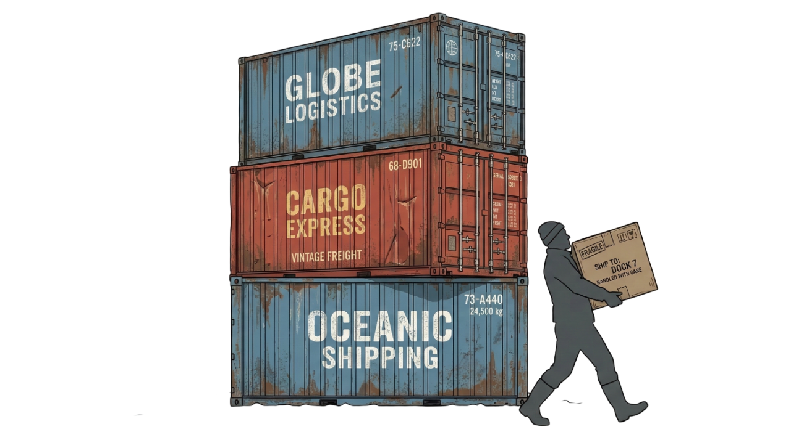
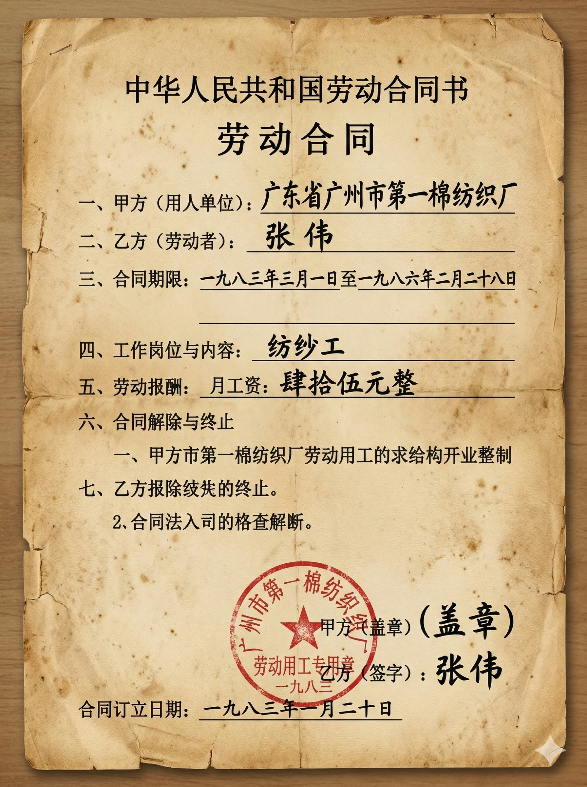

1978年 冬 · 南下的大巴上
你的回答，决定你是谁，以及你将如何见证这段历史。
SHENZHEN SHEKOU INDUSTRIAL ZONE · 1979–1992
制度遗产数字体验计划
「时间就是金钱，效率就是生命」
—— 1979年，蛇口，中国改革开放第一声
哈尔滨工业大学（深圳）设计学 · 刘傲然
1979年·蛇口·你是谁
每一个身份，都是真实存在过的人。
你的选择，决定你以哪种视角见证这段历史。
1979年7月，招商局蛇口工业区正式破土动工。
这片荒野的第一声炮响，震碎的不只是山石——
它震碎的是「干多干少一个样」的几十年惯例。
你是第一批来到蛇口的工人。
铁锹、炸药、荒地——还有一个模糊的承诺：在这里，多干的人会多得。

劳资处叫你去谈话。桌上，摆着一份合同。
全国第一份劳动合同——
上面写着：「企业有权依据生产需要解除劳动关系。」
这是一个没有先例的时代。
签字的一刻，你不知道自己在开创历史，还是走进陷阱。

码头要扩建，三家单位来竞标。
在全国其他地方，这种项目只有一个结果：谁关系硬，谁拿。
但在蛇口，袁庚说：按标书说话。
工友王福从集装箱上摔下来了。
救护车赶来，但医院要先付钱。
他没有买保险。每月4块钱，他觉得没必要。
他说，这辈子没出过事。
蛇口工业区召开管委会换届选举。
这在全中国是第一次——
不是上面任命，而是工人投票选出管理者。
你手里的这张选票，轻得像一片纸，
但在1986年，它比山还重。
ARCHIVE HALL · 历史档案馆